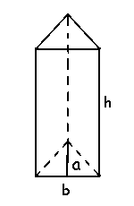

Triangular Prism: A prism that has 3 rectangular faces and 2 parallel triangular bases, then it is a triangular prism.

Basearea of a TriangularPrism=12abBaseareaofaTriangularPrism =12ab
Surface area o fa TriangularPrism=ab+3bhSurfaceareaofaTriangularPrism =ab+3bh
Volume of a TriangularPrism=12abhVolumeofaTriangularPrism =12abh
Where,
a – apothem length of the triangular prism.
b – base length of the triangular prism.
h – height of the triangular prism.